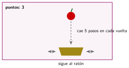
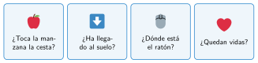

Bucles y condiciones: un juego
🤔 Pienso5 min
Qué hago aquí: Piensa un momento y contesta con lo que ya sabes. No pasa nada si no lo sabes: es para empezar.
En un juego hay que coger manzanas con una cesta. ¿Qué preguntas se hace el juego todo el rato?
📖 Leo y aprendo10 min
Qué hago aquí: Lee despacio, mira los dibujos y los ejemplos, y quédate con la idea clave del final.
Un juego está atento a muchas cosas a la vez. Para eso se usa por siempre con un si dentro: en cada vuelta, el si mira la condición.

En cada vuelta del por siempre, el juego se pregunta:

✏️ Hago30 min
Qué hago aquí: Haz las actividades en orden. Empieza siempre por las básicas.
Monta el juego con dos objetos: la cesta y la manzana. Marca cuando funcione:
¿Por qué el si ¿tocando Cesta? va dentro del por siempre?
Si la manzana llega al suelo (posición y < −170), tiene que volver arriba. Añade ese si. Escribe los bloques.
Añade vidas: empieza en 3 y baja 1 cuando la manzana llega al suelo. Con 0 vidas, el juego para.
✏️ Puedes responder escribiendo, con un dibujo o un esquema, o contándolo en voz alta.
🚀 Amplío (si quieres saber más)
Qué hago aquí: ¿Has terminado? Lee la curiosidad o elige el reto. Es voluntario.
Haz que la manzana caiga cada vez más rápido con una variable velocidad. Añade una piedra que quite una vida.
✅ Compruebo5 min
Qué hago aquí: Contesta sin mirar la ficha y marca cómo lo llevas.